PROJECTS
Nov 2014 – Present
Established exclusive partnership with Shanghai Media Group
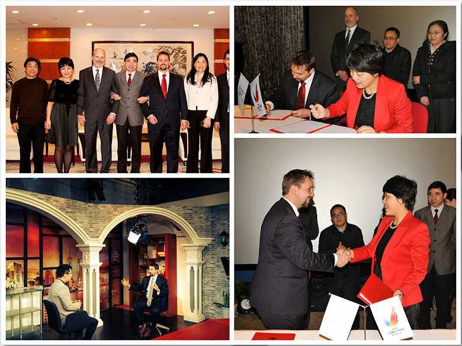
• Worked to build a mutually exclusive reciprocal distribution partnership
with Shanghai Media Group, the second largest government-owned media
conglomerate in China, then created an international, multi-language team
working to create digital media, photography, and footage that was
distributed to a network of agents globally.
• SMG TV Interview: youtube.com/watch?v=8g4f4shw5Dk
• Daily Herald Press Announcement: heraldextra.com/news/local/central/
orem/orem-s-cmg-partners-with-chinese-multimedia-group/article_cdcff92d-
9876-5042-9c58-143f299b2ae7.html
Jun 2012 – Apr 2015
Founded and Exited StockFootage.com
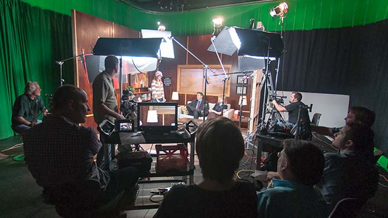
• Recruited and trained an international workforce to supply high-quality
video footage to global stock media agencies including Getty Images,
Shutterstock, iStockphoto, Fotolia, Corbis, Pond5, and over 400 of our
own websites, including StockFootage.com.
• Provided cinematography and production services to international clients
such as National Geographic, LG Electronics, Adobe, T3Media, Discovery,
and many others.
• Provided company interviews to SMG, Deseret News, Daily Herald, Post
Magazine, Markee Magazine, and others.
• Built in-house production unit, model and location databases, image content
suppliers, and retouching teams dedicated to the delivery of high-end
authentic commercial imagery in a rapidly changing environment.
• Managed a multi-language working environment. Supported and trained
roles of leadership, management, and coaching to direct reports.
• Oversaw budget analysis reports, project proposals, and creative research.
• Worked directly with offshore distribution teams in Chengdu, Beijing, and
Shanghai.
• Supervised investments for IRS & Chinese tax compliance.
Nov 2012 – Apr 2014
Helped create the viral “Will It Blend” video series
with over 285,786,308+ views
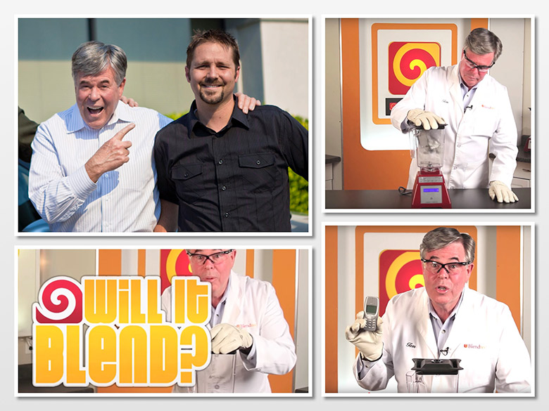
Dortch’s company CMG produced the viral video series for Blendtec
called “Will it blend?” (youtube.com/user/Blendtec). These videos soon
received international attention and around 300 million views.
Dec 2013 – Apr 2014
Produced and Directed project with LG Electronics and billionaire
Bruno Wu for 2016 Summer Olympic Games in Rio
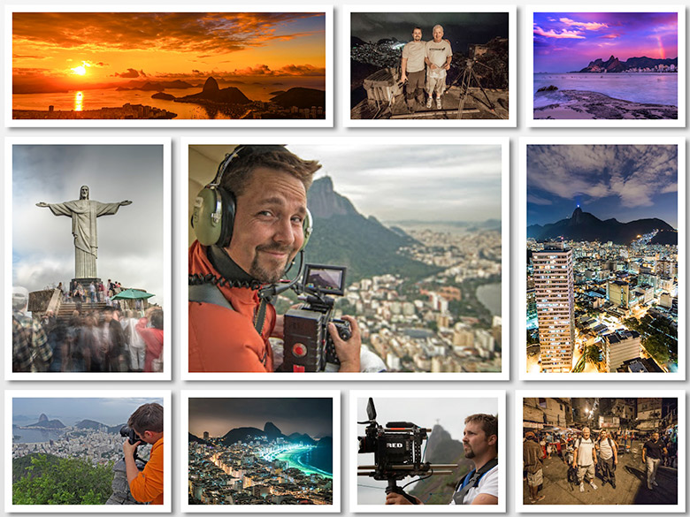
Procured investment from LG Electronics (lg.com) and billionaire
entrepreneur Bruno Wu (forbes.com/profile/bruno-wu), then produced,
directed, and shot 8K Ultra HD scenes in Rio Brazil, which were then
licensed to several international television companies preparatory to the
2016 Summer Olympic Games (olympic.org/rio-2016). Footage from this
project was featured by Nikon (nikon.com), a sample of which can be
seen on YouTube (youtu.be/wZCsegPiojc).
Jul 2013 – Aug 2013
Spent 50 days in Israel shooting Ultra HD scenes for an
award-winning BBC documentary.
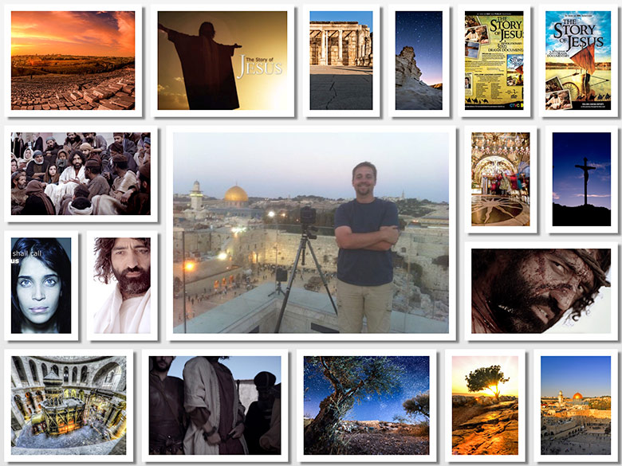
In a major two-part series, nine of the world’s leading Biblical experts
re-examine the Gospel accounts of Jesus’s life. Using the very latest
archaeological, historical and theological research, the programs analyze
the key influences on Jesus’s teaching, explore the land in which he lived
and preached, and encounter the people who surrounded him. Illustrated
with specially-shot drama footage of the key moments in Jesus’s life,
aerial and time-lapse footage, these experts investigate the true
meaning of the 2000-year-old story of Jesus, and what it meant to his
original first century followers. Cinematographer and post-production
supervisor, overseeing the editing, motion graphics, and color
correction for the award-winning, 145-minute, BBC documentary entitled
“The Story Of Jesus.” Locations included: Bethlehem, Holy, Sepulchre,
Capernaum, Jerusalem, Dome of the Rock, Golgatha, Garden Tomb, Sea
of Galilee, Arbel, Ein Gedi, Caesarea, Mitzpe Ramon Crater, Wadi Zin
Desert, Nahal David, Nimrod Castle, Carmel Mountains, Banias, Antipas
Palace, Banyans, Baram Ruins and Ancient Synagogue, Kemach Waterfalls,
Mount Tabor, Ein Harod, Dor Beach, Adamit Park Caves Arch, Tel
Aviv, Dead Sea, Carpentry, Desalination Plant, Zenith Solar Plants, Tel
Beer Sheva, Masada, and Beit She’an.
Jun 2012 – Jul 2012
Created an episode of “Leno’s Garage” with Jay Leno featuring
VIA VTRUX and Bob Lutz (father of the Viper)
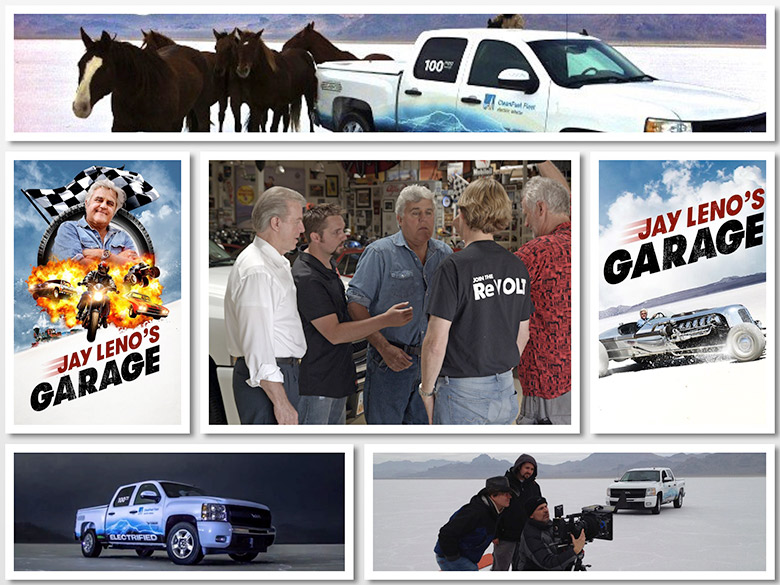
Producer, Cinematographer, Editor, and Motion Artist for an episode of
“Leno’s Garage” with Jay Leno featuring VIA VTRUX and Bob Lutz
(father of the Viper), as seen on YouTube (youtu.be/p5STy6HRZEQ)
Jan 2012 – Apr 2012
Used state-of-the-art equipment to capture imagery of an elite
fighting force within the United States Special Forces
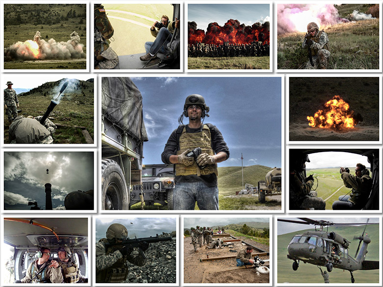
Spent several weeks working with the US special forces group 19 under
the direction of Major Besinger and Sergeant Felingham creating video
footage and images of many remarkable events and taking operating shots
from within a hummer, a chinook, a Blackhawk helicopter, and several
other military vehicles. We captured a Blackhawk lifting a hummer both
from within the helicopter and from the ground using a RedOne,
Phantom, and multiple other cameras, and slow motion footage of
machine gun firing towards the camera, grenades, mortars, and over 1,000
pounds of C4 explosions. We captured vehicles and soldiers in the rain
and mud firing all sorts of different weapons with close-ups of many
soldiers in their body armor and military avvttire and organized the
signing of over 100 model releases.
Sep 2011 – Oct 2011
Cinematographer for film featuring IMAGINE DRAGONS
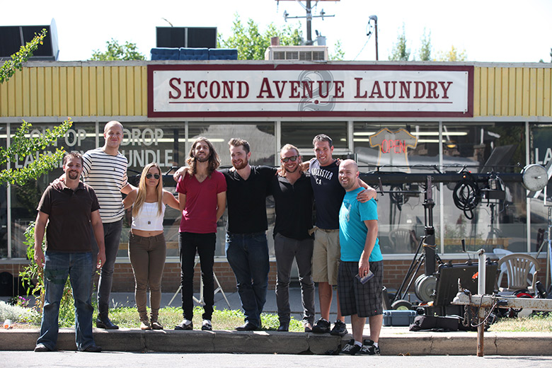
Project: https://twitter.com/Imaginedragons
Aug 2010 – Oct 2010
Time-lapse work with Tom Lowe on Award Winning Ultra HD
Documentary, entitled: Timesapes
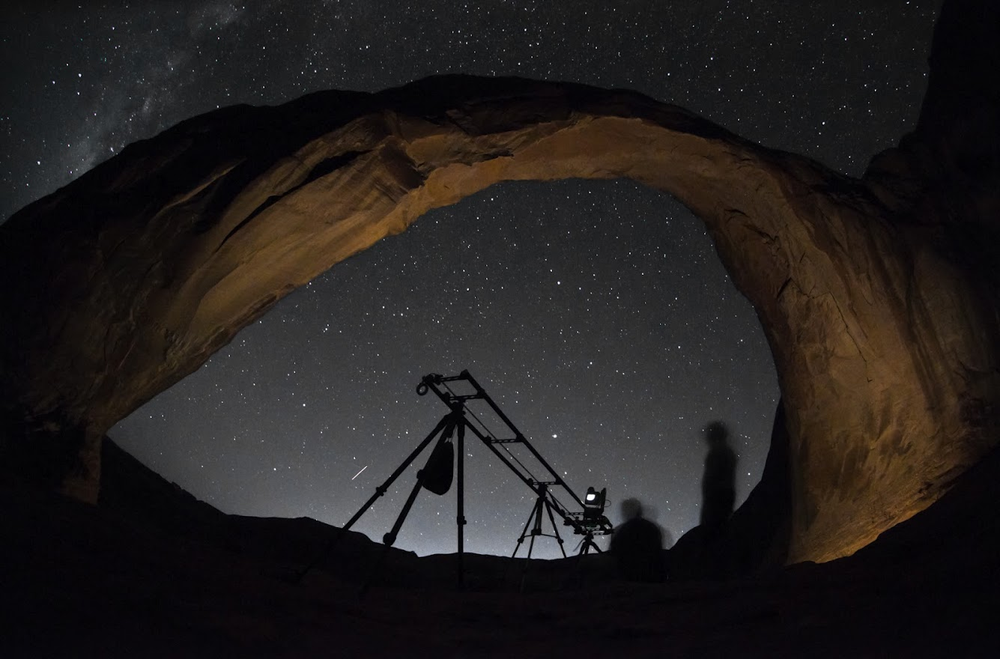
Freelance cinematographer hired by Tom Lowe to shoot for the award
winning Ultra HD documentary entitled Timescapes, renowned as the
world’s first movie to be sold to the public as a 4K file.
Aug 2010
Producing, Editing, and Motion Design for a Michael McLean
Music Video and Deseret Book
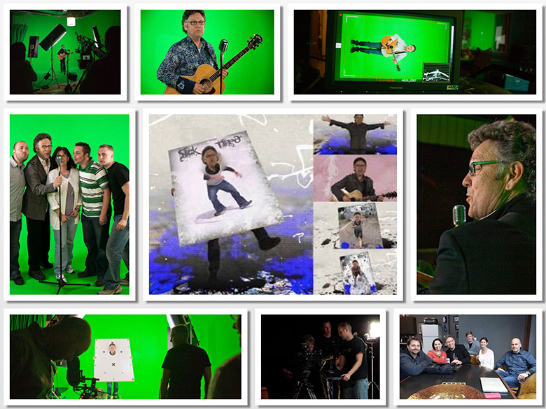
Michael McLean: michaelmcleanmusic.com
Deseret Book: deseretbook.com
Jun 2009
Coproduced DONNY & MARIE OSMOND TV Commercial
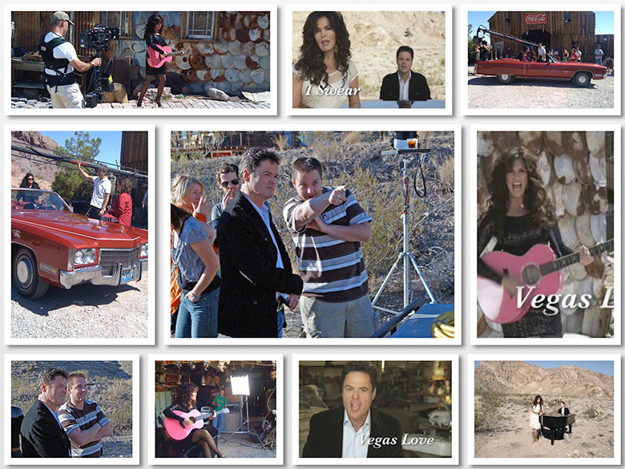
Nevada-based production with Utah-based crew.
Jun 2008
Motion Graphic Design and Editing for OSMOND 50th, 2009
World Tour, and PBS Documentary
• The Osmond’s filled the Wembley Arena (sits 90,000 people) 3 nights in
a row! Then continued their tour throughout the world. I did all of the onstage
video, Motion Graphic Design and Editing for Osmond 50th, 2009
World Tour, and PBS Documentary.
• More Info.
2009
Project with DAVID ARCHULETA

When he was twelve years old, Archuleta became the Junior Vocal Champion
on Star Search 2. In 2007, at sixteen years old, he became one of the
youngest contestants on the seventh season of American Idol. In May 2008
he finished as the runner-up, receiving 44 percent of over 97 million votes.
Jan 2008 – Jul 2008
Created Visuals for the award-winning Las Vegas show with
DONNY & MARIE OSMOND
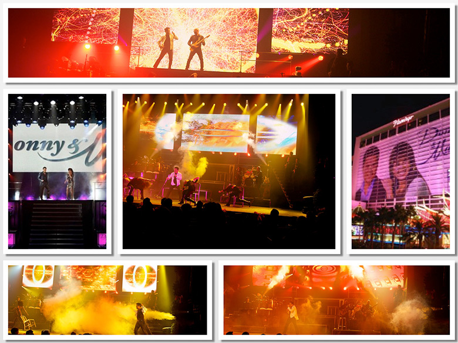
Donny & Marie in Las Vegas and Donny & Marie on Broadway.
Additial
details can be found and tickets can be purchased at vegas.com.
Jan 2008
Edited graphics and shot footage for nationally televised live
performance on stage with 21,000 people
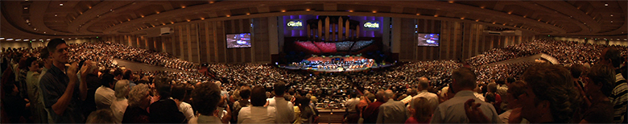
News: deseretnews.com/article/700245992/Osmonds-Mormon-Tabernacle-
Choir-excited-for-milestone-marking-Pioneer-Day-concerts.html
Jul 2007
Created Project Winning Adobe Design Achievement Award
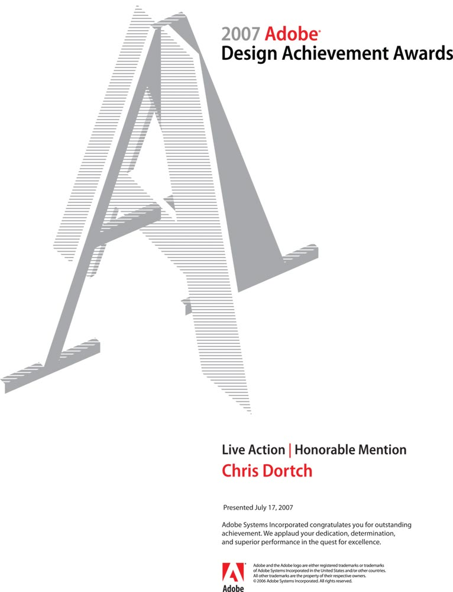
• Channel: UntoldTales.tv
• Award: adobeawards.com
July 2003
Formed a business and multiple newspaper publications, then
sold the business
Founded an LLC and started three publications, organized bi-weekly
distribution to over 1,500 homes, managed advertising, and worked as Editor-
In-Chief overseeing all operations of each publication before selling
the publications to a competitor.
 
